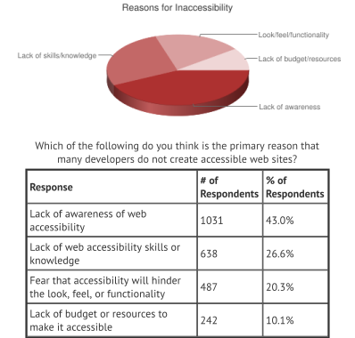

Barrierefreiheit
im Web
Infoabend am 24.10.2016

The power of the Web is in its universality. Access by everyone regardless of disability is an essential aspect.
Barrierefreies Internet sind Web-Angebote, die von allen Nutzern unabhängig von körperlichen oder technischen Möglichkeiten uneingeschränkt (barrierefrei) genutzt werden können.
Agenda
- Wozu Barrierefreiheit im Web?
- Wer ist von Barrieren betroffen?
- Was sind überhaupt Barrieren?
- Wie packen wir's an?
- Optional: Kurze Screenreader-Demonstration
Wozu Barrierefreiheit?
Zahlen & Fakten
- Weltweit sind ca. 15% von einer Behinderung betroffen
- In der EU ca. 38 Millionen Menschen mit Behinderung
- In Deutschland geschätzt 500.000 Sehbehinderte und 150.000 Blinde
- Etwa 5 bis 9% der Männer in Deutschland ist farbfehlsichtig
Zahlen & Fakten
- In Deutschland ist Barrierefreiheit gem. Barrierefreie Informationstechnik-Verordnung (BITV) seit 2002 verpflichtend für öffentlich zugängliche Internetangebote der Bundesverwaltung
- In Österreich ist seit Januar 2016 Barrierefreiheit auch Pflicht für Online-Shops
- In Zukunft wird Barrierefreiheit auch in Deutschland im privatwirtschaftlichen Raum an Bedeutung gewinnen (Zielvereinbarungen des BGG)
Zahlen & Fakten
Menschen mit Behinderungen verbringen statistisch gesehen überdurchschnittlich viel Zeit im Internet und sind auf speziell aufbereitete Angebote angewiesen
Assistive Technologien
- Blindheit & Sehschwächen
- Vorlesesoftware (“Screenreader”)
- Braille-Zeile
- Bildschirmlupe
- Körperliche Behinderungen
- Spezialtastaturen, Cursorsteuerungen und alternative Eingabegeräte
- Spracherkennungssoftware
- u.v.m.
Alternative Aufbereitung
- Beschreibungen zu Bildern
- Transskriptionen und Untertitel für Videos
- Videos in Gebärdensprache für Gehörlose
- Leichte Sprache für Nutzer mit kognitiven oder sprachlichen Einschränkungen
- Audioversion für Nutzer mit Verständnis- oder Leseproblemen
Wer ist betroffen?
Menschen mit Behinderung
- Körperliche Behinderungen (motorische Einschränkungen)
- Sinnesbehinderungen (Blindheit, Sehschwächen, Fehlsichtigkeit, Gehörlosigkeit, Schwerhörigkeit, Taubblindheit etc.)
- Sprachbehinderungen
- Kognitive Behinderungen (Lernbehinderung, schlechtes Abstraktionsvermögen, Dyslexie)
Spezielle Nutzer
- Mobile Nutzer (Eingeschränkte Internetverbindung, schwache technische Ausstattung, eingeschränkter Funktionsumfang)
- Unerfahrene Nutzer
- Senioren & Kinder
- Nicht-Muttersprachler
- Suchmaschinen / Robots
- u.v.m.
Jeder ist betroffen ...
... zumindest in bestimmten Situationen!
Was sind Barrieren?
Barrieren?
- technisch-funktionale Barrieren
- Design-Barrieren
- redaktionelle & inhaltliche Barrieren
- organisatorische Barrieren
Technisch-funktionale Barrieren
beruhen auf verwendeten Techniken oder Programmierungen, Hard- und Softwareeinschränkungen (auch durch assistive Technologien) oder Problemen bei der Datenübertragung
Beispiele Technik
- Nichteinhaltung oder Nutzung veralteter technischer Standards
- Nutzung grundlegend barrierebehafteter Technologien (Flash, Java-Applets)
- Dynamisch aufbereitete und interaktiv zugängliche Inhalte (AJAX)
- Hard- und Softwareanforderungen, die Clientsysteme u. U. nicht abbilden können (Leistung, Bildschirmgröße, Sensoren, Ein- & Ausgabegeräte)
- Mangelhafte Tastaturbedienbarkeit
- unlogische Fokusreihenfolge bei Links und Formularen
- inhaltlich relevante Bilder als Hintergrundbilder
Beispiele Technik
- schlechte serverseitige Performance (lange Wartezeiten)
- schlechte perzeptive Performance
- unnötig große Datenmengen (ggf. auch finanzielle Barriere)
- vermeidbare Abhängigkeiten von Drittanbieter-Technologien
- mangelnde Fehlertoleranz und fehlende Rückfallmechanismen („Fallbacks“) bei teilweisem / temporären Ausfall beteiligter Technologien (z. B. langsame oder instabile Internetverbindung)
Technisch-funktionale Barrieren
- liegen im Verantwortungsbereich von Webentwicklern und -dienstleistern
- Richtlinien zur Beseitigung sind die BITV, WCAG, UUAG, ATAG
Design-Barrieren
beruhen auf unflexibler oder mangelhafter Gestaltung
Beispiele Design
- suboptimale Darstellung auf bestimmten Plattformen durch starres, nicht-responsives / nicht-adaptives Design
- schlechte Textgestaltung (z.B. zu kleine Schrift, schwer lesbare Schriftart)
- zu schwache / starke Kontraste, schwierige Farbverhältnisse oder Abhängigkeit von korrekter Farbwahrnehmung des Nutzers
- Ablenkung durch blinkende oder animierte Elemente
- mangelhafte Gestaltung von Formularen (fehlende oder nicht aussagekräftige Feldbeschriftungen)
- CAPTCHAs
Design-Barrieren
- liegen im Verantwortungsbereich von Webdesignern
- Richtlinien zur Beseitigung sind die WCAG
Redaktionelle & inhaltliche Barrieren
beruhen auf unzureichender redaktioneller oder struktureller Aufbereitung des Inhalts und seiner Umsetzung für das Internet
Beispiele Inhalt
- Sprachliche Komplexität (fehlende Textstrukturen, verschachtelte Sätze, umständliche Formulierung, Fachbegriffe)
- Bilder ohne alternative Beschreibungen oder Text in Bildern
- Bilder, Filme und Animationen ohne alternative Aufbereitungen sind nicht verwertbar für Suchmaschinen / Robots
Redaktionelle & inhaltliche Barrieren
- liegen im Verantwortungsbereich von Webredakteuren
- Hilfen zur Beseitigung sind europäische Richtlinien für leichte Lesbarkeit, WCAG
Organisatorische Barrieren
sind bedingt durch organisatorische Umstände und das Umfeld, in dem Entscheidungen getroffen werden
Beispiele Organisation
-  Quelle: WebAIM
mangelndes Bewusstsein und fehlender Handlungswille in Sachen Barrierefreiheit - fehlendes Budget für DGS-Videos und alternative Aufbereitungen (z.B. Untertitel, Audioversion)
Organisatorische Barrieren
- liegen im Verantwortungsbereich von Auftraggebern und Projektleitern
Wie packen wir's an?
Die Gute Nachricht
- Es gibt für alles eine Lösung!
- standardisierte Webtechnologien, insbesondere HTML5, sind bereits von Haus aus weitestgehend barrierefrei
- grundlegende Barrierefreiheit ist mit einfachen Mitteln zu erreichen
- es beginnt alles mit einem „Mind Shift“
- Wir müssen lernen, dass Barrierefreiheit kein optionales „On Top“-Feature ist, sondern unbedingtes Qualitätskriterium
The biggest misconception about accessibility is that by adding it you're doing somebody a favor. You're not, you're doing your job. #a11y
— james williamson (@jameswillweb) 20. Oktober 2016
Konzeption
- Klare, gut strukturierte Informationsarchitektur
- Zugänglichkeit und Plattformunabhängigkeit im Fokus
- Verschiedene Betriebssysteme und Hard- / Softwareausstattungen
- Verschiedene Ausgabeformate und Nutzungszenarien (Desktop, PDA / Smartphone, assistive Technologien)
- Ausrichtung auf ein größtmögliches Nutzerspektrum
- Körperliche, geistige und soziale Möglichkeiten
- Bildungs, Ausbildungs und intellektuelles Niveau
- Alter und Erfahrung im Umgang mit Computern / dem Internet
- Lese-, Schreib- und Sprachkenntnisse
Inhalt
- gut erfassbare Strukturen (Überschriftenhierarchie, zweckmäßige Gliederung, logische Reihenfolge)
- leicht verständliche Sprache
- Bilder zur Veranschaulichung komplexer Zusammenhänge
- Optimierung für Vorlesesoftware (oder integrierte Vorlesefunktion)
- alternative Aufbereitungen, z.B.
- Bildbeschreibungen
- Leichte Sprache als eigenständige Übersetzung
- Videos mit Untertiteln und in Gebärdensprache
Design
- klar strukturiertes, leicht erfassbares Layout
- intuitive Bedienung (Nutzung gelernter Muster)
- adaptives / responsives Design für viele Ausgabeplattformen
- zielführende Farb- und Kontrastverhältnisse
- ausreichend große, gut lesbare Schriften
- deutlich wahrnehmbarer Fokus (Links & Formulare)
- Gestaltung als „Enhancement“: HTML = logische Struktur, CSS = Präsentation
Technik
- Nutzung etablierter / offener Standards
- Sauberes, semantisches HTML + Ergänzungstechnologien (z.B. WAI-ARIA)
- Ausschluss technologischer Hürden (Flash, Java, ggf. AJAX)
- Barrierefreiheit als Auswahlkriterium für Drittanbieter-Technologie
- Unterstützung assistiver Technologien (Tastaturbedienbarkeit, Skalierbarkeit, Schrift- und Farbanpassung)
- „Progressive Enhancement“: Basis ist der kleinste gemeinsame Nenner, bessere Möglichkeiten zur Aufwertung, nicht als Anforderung nutzen
- Fehlertoleranz und Rückfallmechanismen
- Performance-Optimierung (serverseitig und perzeptiv)
Tests
- Quelltext-Validierung (W3C)
- Tests in verschiedenen Umgebungen und auf unterschiedlichen Ausgabeplattformen (z.B. im Open Device Lab Nürnberg)
- Testen auf technische Barrierefreiheitsmängel (z.B. mit Tenon)
- Tests mit möglichst unterschiedlichen, echten Nutzern
Weiterbildung
- 2. November 2016 Workshop für „Grundlagen barrierefreier Web-Programmierung“
- 10. November 2016 Accessibility Club #5 mit Karl Groves (Paciello Group, Tenon)